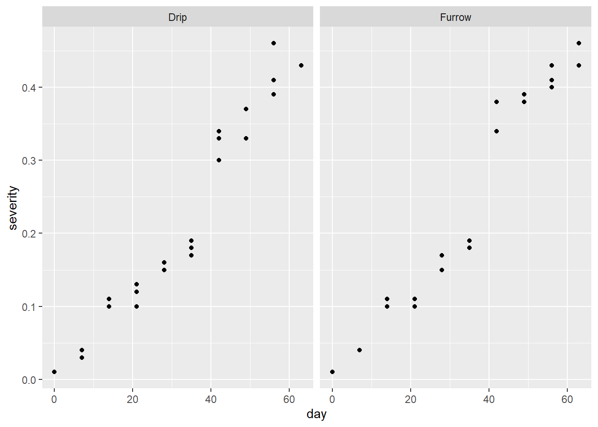

library(tidyverse)
library(gsheet)
library(ggthemes)ANOVA em DBC
Experimentos em DBC (Delineamento em Blocos Casualizados), são um tipo de design experimental utilizado para controlar variações provenientes de um ambiente exeperimental não homogêneo (não aleatórias) entre unidades experimentais.
Podemos utilizar a função aov() ou lm() para realizar a ANOVA. A fórmula resposta ~ tratamento + Error(bloco) especifica que a variável resposta é explicada pelo efeito do tratamento, considerando o bloco como um fator de bloqueio (variável de erro).
Pacotes utilizados
Importando os dados
soja <- gsheet2tbl("https://docs.google.com/spreadsheets/d/1bq2N19DcZdtax2fQW9OHSGMR0X2__Z9T/edit#gid=866852711")
soja <- soja |>
mutate(TRAT = as.factor(TRAT), BLOCO = as.factor(BLOCO))Vizualização gráfica paras as variáveis
library(patchwork)
dfc <- soja |>
ggplot(aes(TRAT, DFC))+
geom_jitter(width = 0.1, color = 'gray')+
stat_summary(fun.data = "mean_cl_boot", color = 'black', alpha = 0.5)+
theme_few()
fer <- soja |>
ggplot(aes(TRAT, FER))+
geom_jitter(width = 0.1, color = 'gray')+
stat_summary(fun.data = "mean_cl_boot", color = 'black', alpha = 0.5)+
theme_few()
prod <- soja |>
ggplot(aes(TRAT, PROD))+
geom_jitter(width = 0.1, color = 'gray')+
stat_summary(fun.data = "mean_cl_boot", color = 'black', alpha = 0.5)+
theme_few()
dfc + fer + prodRealizando a ANOVA
aov_dfc <- lm (DFC ~ TRAT + BLOCO, data = soja)
anova(aov_dfc)Analysis of Variance Table
Response: DFC
Df Sum Sq Mean Sq F value Pr(>F)
TRAT 7 149.299 21.3284 51.5490 8.218e-12 ***
BLOCO 3 0.461 0.1537 0.3716 0.7743
Residuals 21 8.689 0.4138
---
Signif. codes: 0 '***' 0.001 '**' 0.01 '*' 0.05 '.' 0.1 ' ' 1Vale lembrar que para prosseguir com a ANOVA em DBC as mesmas pressuposições para ANOVA em DIC devem ser atendidas. Os testes são feitos como foi demonstrado para ANOVA em DIC.
Observando os grupos de médias
library(multcomp)
library(emmeans)
medias_dfc <- emmeans(aov_dfc, ~ TRAT)
medias_dfc TRAT emmean SE df lower.CL upper.CL
1 10.88 0.322 21 10.21 11.54
2 6.42 0.322 21 5.76 7.09
3 6.05 0.322 21 5.38 6.72
4 4.75 0.322 21 4.08 5.42
5 4.20 0.322 21 3.53 4.87
6 4.00 0.322 21 3.33 4.67
7 4.08 0.322 21 3.41 4.74
8 4.58 0.322 21 3.91 5.24
Results are averaged over the levels of: BLOCO
Confidence level used: 0.95 Teste Tukey
pwpm(medias_dfc) 1 2 3 4 5 6 7 8
1 [10.87] <.0001 <.0001 <.0001 <.0001 <.0001 <.0001 <.0001
2 4.450 [ 6.42] 0.9896 0.0249 0.0017 0.0006 0.0009 0.0107
3 4.825 0.375 [ 6.05] 0.1329 0.0107 0.0040 0.0058 0.0628
4 6.125 1.675 1.300 [ 4.75] 0.9202 0.7173 0.8072 0.9999
5 6.675 2.225 1.850 0.550 [ 4.20] 0.9998 1.0000 0.9896
6 6.875 2.425 2.050 0.750 0.200 [ 4.00] 1.0000 0.9020
7 6.800 2.350 1.975 0.675 0.125 -0.075 [ 4.07] 0.9499
8 6.300 1.850 1.475 0.175 -0.375 -0.575 -0.500 [ 4.57]
Row and column labels: TRAT
Upper triangle: P values adjust = "tukey"
Diagonal: [Estimates] (emmean)
Lower triangle: Comparisons (estimate) earlier vs. laterAgrupamento
cld(medias_dfc, Letters = letters) TRAT emmean SE df lower.CL upper.CL .group
6 4.00 0.322 21 3.33 4.67 a
7 4.08 0.322 21 3.41 4.74 a
5 4.20 0.322 21 3.53 4.87 a
8 4.58 0.322 21 3.91 5.24 ab
4 4.75 0.322 21 4.08 5.42 ab
3 6.05 0.322 21 5.38 6.72 bc
2 6.42 0.322 21 5.76 7.09 c
1 10.88 0.322 21 10.21 11.54 d
Results are averaged over the levels of: BLOCO
Confidence level used: 0.95
P value adjustment: tukey method for comparing a family of 8 estimates
significance level used: alpha = 0.05
NOTE: If two or more means share the same grouping symbol,
then we cannot show them to be different.
But we also did not show them to be the same. Quando se tem mais de uma variável resposta no conjunto de dados a anova deve ser feita para cada uma.
Adicionando as letras do Teste Tukey em Gráficos
Os resultados da análise de variância junto com o teste tukey podem ser ilustrados em gráficos.
Veja a demonstração para a variável produtividade
aov_prod <- lm (PROD ~ TRAT + BLOCO, data = soja)
anova(aov_prod)Analysis of Variance Table
Response: PROD
Df Sum Sq Mean Sq F value Pr(>F)
TRAT 7 2993906 427701 2.6367 0.04021 *
BLOCO 3 105665 35222 0.2171 0.88340
Residuals 21 3406431 162211
---
Signif. codes: 0 '***' 0.001 '**' 0.01 '*' 0.05 '.' 0.1 ' ' 1medias_prod <- emmeans(aov_prod, ~ TRAT)
cld(medias_prod, Letters = letters) TRAT emmean SE df lower.CL upper.CL .group
1 4219 201 21 3800 4638 a
2 4935 201 21 4516 5354 ab
8 5078 201 21 4659 5497 ab
3 5110 201 21 4691 5529 ab
5 5122 201 21 4703 5541 ab
7 5128 201 21 4709 5546 ab
4 5140 201 21 4721 5559 ab
6 5256 201 21 4837 5675 b
Results are averaged over the levels of: BLOCO
Confidence level used: 0.95
P value adjustment: tukey method for comparing a family of 8 estimates
significance level used: alpha = 0.05
NOTE: If two or more means share the same grouping symbol,
then we cannot show them to be different.
But we also did not show them to be the same. Produzindo o gráfico e adicionando as letras correspondentes aos grupos de médias:
df_prod <- data.frame(medias_prod)
df_prod|>
ggplot(aes(TRAT,emmean))+
geom_point()+
ylim(2000, 6500)+
geom_errorbar(aes(min = lower.CL,
max = upper.CL,
width = 0.1))+
theme_few()+
annotate(geom = "text", x = 1.2, y = 4250,
label = "a")+
annotate(geom = "text", x = 2.3, y = 4900,
label = "ab")+
annotate(geom = "text", x = 3.3, y = 5150,
label = "ab")+
annotate(geom = "text", x = 4.3, y = 5155,
label = "ab")+
annotate(geom = "text", x = 5.3, y = 5200,
label = "ab")+
annotate(geom = "text", x = 6.3, y = 5275,
label = "ab")+
annotate(geom = "text", x = 7.3, y = 5150,
label = "ab")+
annotate(geom = "text", x = 8.2, y = 5140,
label = "b")
Veja também como sumarizar os resultados em uma tabela
df_prod <- cld(medias_prod, Letters = LETTERS)
df_prod <- as.data.frame(df_prod)
knitr::kable(df_prod |> dplyr::select(TRAT, emmean, .group))| TRAT | emmean | .group | |
|---|---|---|---|
| 1 | 1 | 4219.25 | A |
| 2 | 2 | 4935.00 | AB |
| 8 | 8 | 5078.25 | AB |
| 3 | 3 | 5110.00 | AB |
| 5 | 5 | 5122.00 | AB |
| 7 | 7 | 5127.50 | AB |
| 4 | 4 | 5140.25 | AB |
| 6 | 6 | 5256.25 | B |
library(writexl)
write_xlsx(df_prod, "df.xlsx")Área Abaixo da Curva de Progresso da Doença (AACPD)
A AACPD é uma medida quantitativa utilizada em estudos agrícolas e de saúde para avaliar a evolução temporal de uma doença ou de outro fenômeno que varia ao longo do tempo. Essa métrica é especialmente útil em experimentos onde se deseja comparar diferentes tratamentos ou condições em relação à severidade ou incidência de uma doença ao longo de um período de tempo.
Vamos analisar um conjunto de dados que lida com valores de severidade ao longo do tempo
Importação e vizualização dos dados
curve <- gsheet2tbl("https://docs.google.com/spreadsheets/d/1bq2N19DcZdtax2fQW9OHSGMR0X2__Z9T/edit#gid=1807247585")
curve |>
ggplot(aes(day, severity))+
geom_point()+
facet_wrap(~Irrigation)
curve |>
group_by(day, Irrigation) |>
summarise(mean_sev = mean(severity)) |>
ggplot(aes(day, mean_sev, color = Irrigation))+
geom_point( color = "black")+
geom_line()+
theme_few()+
labs(x = "Days", y = "Severity (%)")`summarise()` has grouped output by 'day'. You can override using the `.groups`
argument.
Obtenção da AACPD, através da função AUDPC() do pacote epifitter.
library(epifitter)
curve2 <- curve |>
group_by(Irrigation, rep) |>
summarise(aacpd = AUDPC(day, severity))`summarise()` has grouped output by 'Irrigation'. You can override using the
`.groups` argument.Realizando a ANOVA para AACPD
m_curve <- lm(aacpd ~ Irrigation + factor(rep),
data = curve2)
anova(m_curve)Analysis of Variance Table
Response: aacpd
Df Sum Sq Mean Sq F value Pr(>F)
Irrigation 1 0.23602 0.236017 10.605 0.08275 .
factor(rep) 2 0.61291 0.306454 13.771 0.06770 .
Residuals 2 0.04451 0.022254
---
Signif. codes: 0 '***' 0.001 '**' 0.01 '*' 0.05 '.' 0.1 ' ' 1Checando as premissas
library(performance)
check_normality(m_curve)OK: residuals appear as normally distributed (p = 0.380).check_heteroscedasticity(m_curve)OK: Error variance appears to be homoscedastic (p = 0.704).Teste Tukey
library(emmeans)
library(multcomp)
med_curve <- emmeans(m_curve, ~ Irrigation)
cld(med_curve, Letters = letters) Irrigation emmean SE df lower.CL upper.CL .group
Drip 13.4 0.0861 2 13.0 13.8 a
Furrow 13.8 0.0861 2 13.4 14.2 a
Results are averaged over the levels of: rep
Confidence level used: 0.95
significance level used: alpha = 0.05
NOTE: If two or more means share the same grouping symbol,
then we cannot show them to be different.
But we also did not show them to be the same. Coenficiente de Variação (CV)
O CV é uma medida estatística que expressa a variabilidade relativa de uma amostra ou de um conjunto de dados em relação à sua média. Na ANOVA, o CV pode ser útil para comparar a dispersão dos dados entre diferentes tratamentos.
O CV é calculado pelo desvio padrão amostral divido pela média amostral e mulriplicado por 100.
É possivel obter o CV através da função cv.model() do pacote agricolae.
library(agricolae)
cv.model(m_curve) # 'm_curve' é o objeto com a saída da última ANOVA realizada[1] 1.097572